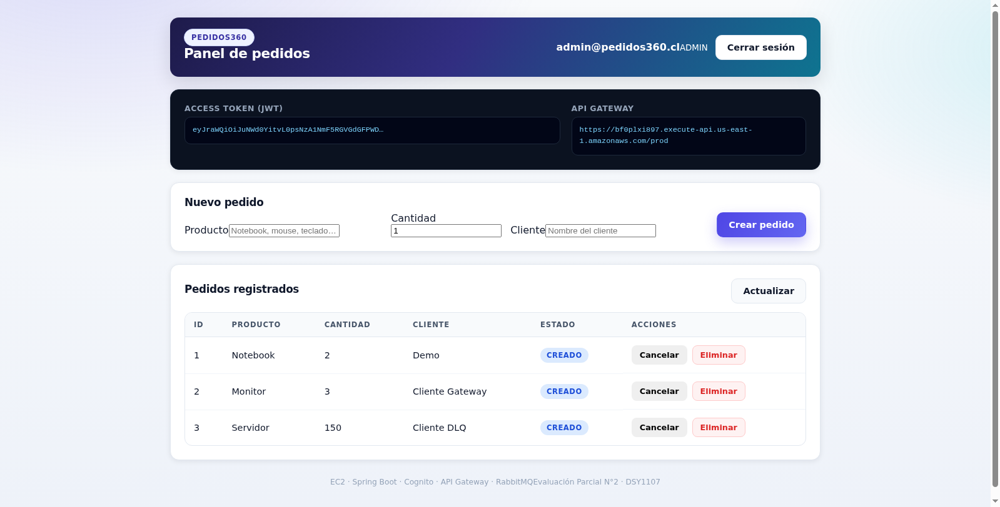
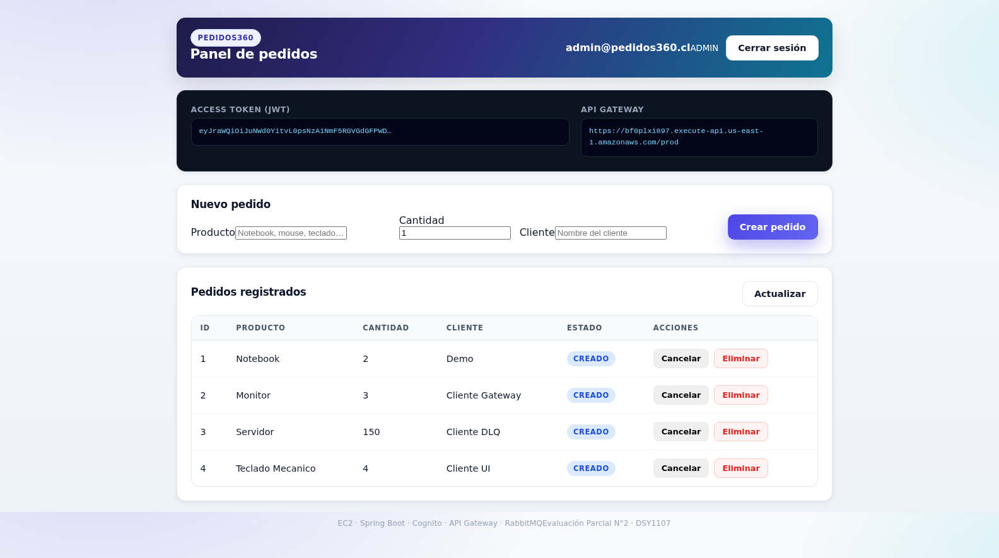

AWS Academy Learner Lab · Cuenta 654654330164 · Región us-east-1
Fecha de verificación: 2 de noviembre de 2026
Este documento reúne las pruebas ejecutadas sobre el sistema ya desplegado, no sobre un entorno local. Cada sección muestra el comando o la acción realizada y la salida real obtenida. El objetivo es que quien revise la evaluación pueda comprobar, sin confiar en la palabra del autor, que:
$ aws ec2 describe-instances --region us-east-1 \
--instance-ids i-03a70f0a716b69333 \
--query 'Reservations[0].Instances[0].[State.Name,PublicIpAddress,InstanceType]' --output text
running 32.200.126.178 t3.micro
La instancia tiene asociada una Elastic IP 32.200.126.178 (eipalloc-04b1dfc182682f987),
de modo que apagar y volver a encender no cambia la IP y no hay que reconfigurar API Gateway,
Cognito ni el certificado TLS.
$ aws ec2 describe-addresses --region us-east-1 \
--query 'Addresses[].[PublicIp,AllocationId,InstanceId]' --output text
32.200.126.178 eipalloc-04b1dfc182682f987 i-03a70f0a716b69333
$ ssh -i labsuser.pem ec2-user@32.200.126.178 'uname -a; docker --version; docker compose version'
Linux ip-172-31-26-83.ec2.internal 6.18.56-125.164.amzn2023.x86_64 #2 SMP PREEMPT_DYNAMIC \
Mon Oct 19 19:39:29 UTC 2026 x86_64 x86_64 x86_64 GNU/Linux
Docker version 25.0.14, build 0bab007
Docker Compose version v5.6.1
Cumple Tarea 1: instancia EC2 levantada y proceso verificado por SSH.
$ docker ps --format "table {{.Names}}\t{{.Status}}\t{{.Ports}}"
NAMES STATUS PORTS
pedidos360-frontend Up 4 minutes (healthy) 0.0.0.0:5173->80/tcp
pedidos360-frontend-tls Up 11 minutes 0.0.0.0:8443->8443/tcp
pedidos360-backend Up 15 minutes 0.0.0.0:8080->8080/tcp
rabbitmq-2 Up 15 minutes 0.0.0.0:5673->5672/tcp, 0.0.0.0:15673->15672/tcp
rabbitmq-1 Up 16 minutes (healthy) 0.0.0.0:5672->5672/tcp, 0.0.0.0:15672->15672/tcp
$ free -m | head -2
total used free shared buff/cache available
Mem: 913 415 87 24 410 330
$ swapon --show
NAME TYPE SIZE USED PRIO
/swapfile file 2G 346.5M -2
Los 2 GB de swap fueron necesarios porque t3.micro entrega solo 913 MB de RAM y conviven
dos nodos de RabbitMQ con una JVM de Spring Boot.
$ docker exec rabbitmq-1 rabbitmqctl cluster_status --formatter json
{
"cluster_name": "pedidos360-cluster",
"disk_nodes": ["rabbit@rabbitmq-1", "rabbit@rabbitmq-2"],
"ram_nodes": [],
"running_nodes": ["rabbit@rabbitmq-2", "rabbit@rabbitmq-1"],
"partitions": {},
"cpu_cores": {"rabbit@rabbitmq-1": 2, "rabbit@rabbitmq-2": 2},
"versions": {
"rabbit@rabbitmq-1": {"rabbitmq_version": "3.13.7", "erlang_version": "26.2.5.16"},
"rabbit@rabbitmq-2": {"rabbitmq_version": "3.13.7", "erlang_version": "26.2.5.16"}
}
}
Dos nodos de disco, sin particiones de red, ambos corriendo la misma versión. Indicador “clúster de 2 nodos”: cumplido.
$ docker exec rabbitmq-1 rabbitmqctl list_queues name messages consumers --quiet
name messages consumers
documentos.dlq 0 0
tickets.dlq 1 0
notificaciones.queue 0 1
tickets.queue 0 1
documentos.queue 0 1
notificaciones.dlq 0 0
Tres colas de negocio con consumidor activo y tres colas de mensajes muertos. Indicador “3 colas + 3 DLQ”: cumplido.
$ docker exec rabbitmq-1 rabbitmqctl list_exchanges name type --quiet | grep pedidos
pedidos.dlx direct
pedidos.direct direct
pedidos.topic topic
Indicador “exchange direct y topic”: cumplido.
$ docker exec rabbitmq-1 rabbitmqctl list_policies --quiet
vhost name pattern apply-to definition priority
/ ha-all ^(?!amq\.) queues {"ha-mode":"all","ha-sync-mode":"automatic"} 0
Un pedido con cantidad = 150 excede el umbral de validación del consumidor de tickets, que responde
basicNack(requeue=false). El mensaje se enruta a pedidos.dlx y termina en tickets.dlq.
$ curl -s -u pedidos:pedidos123 http://32.200.126.178:15672/api/queues/%2F | jq -r '.[] | ...'
documentos.dlq msgs=0 consumers=0 node=rabbit@rabbitmq-1
documentos.queue msgs=0 consumers=1 node=rabbit@rabbitmq-1
notificaciones.dlq msgs=0 consumers=0 node=rabbit@rabbitmq-1
notificaciones.queue msgs=0 consumers=1 node=rabbit@rabbitmq-1
tickets.dlq msgs=1 consumers=0 node=rabbit@rabbitmq-1 <-- mensaje muerto
tickets.queue msgs=0 consumers=1 node=rabbit@rabbitmq-1
El mensaje está en la DLQ y ya no en la cola original: el ciclo publicar → consumir → fallar → nack sin requeue → DLX → DLQ funciona.
$ aws cognito-idp list-users --user-pool-id us-east-1_9b2C1fxtb \
--query 'Users[].[Username,UserStatus,Attributes[?Name==`email`].Value|[0]]' --output text
8468a418-f071-70ff-2085-4a3a218bd20d CONFIRMED admin@pedidos360.cl
b478a4e8-d051-704e-29d9-1fd2437e7fcc CONFIRMED collab@pedidos360.cl
f4e8c408-50d1-7020-f408-c2a2d86cf5fe CONFIRMED cliente@pedidos360.cl
$ aws cognito-idp list-groups --user-pool-id us-east-1_9b2C1fxtb \
--query 'Groups[].[GroupName,Description]' --output text
CUSTOMER Grupo CUSTOMER de Pedidos360
ADMIN Grupo ADMIN de Pedidos360
COLLABORATOR Grupo COLLABORATOR de Pedidos360
$ for g in ADMIN COLLABORATOR CUSTOMER; do
echo -n "$g: "
aws cognito-idp list-users-in-group --user-pool-id us-east-1_9b2C1fxtb \
--group-name $g --query 'Users[].Username' --output text
done
ADMIN: 8468a418-f071-70ff-2085-4a3a218bd20d
COLLABORATOR: b478a4e8-d051-704e-29d9-1fd2437e7fcc
CUSTOMER: f4e8c408-50d1-7020-f408-c2a2d86cf5fe
Cada grupo tiene exactamente un usuario, lo que permite demostrar la autorización diferenciada.
$ aws cognito-idp describe-user-pool-client --user-pool-id us-east-1_9b2C1fxtb \
--client-id 261rvdvemjgib6n86vrb05tl9k \
--query 'UserPoolClient.[ClientName,ExplicitAuthFlows,AllowedOAuthFlows]'
pedidos360-spa-v2
["ALLOW_REFRESH_TOKEN_AUTH","ALLOW_USER_PASSWORD_AUTH"]
["code"]
Flujo Authorization Code + PKCE, sin client secret: es la configuración correcta para una SPA.
$ curl -s https://bf0plxi897.execute-api.us-east-1.amazonaws.com/prod/api/health
{"status":"UP","app":"pedidos360-backend","timestamp":"2026-11-02T01:14:03.756290632Z"}
$ curl -o /dev/null -w "%{http_code}\n" \
https://bf0plxi897.execute-api.us-east-1.amazonaws.com/prod/api/pedidos
401
El autorizador JWT rechaza la petición antes de llegar al backend.
$ TOKEN=$(aws cognito-idp initiate-auth \
--client-id 261rvdvemjgib6n86vrb05tl9k \
--auth-flow USER_PASSWORD_AUTH \
--auth-parameters USERNAME=admin@pedidos360.cl,PASSWORD=Admin1234 \
--query 'AuthenticationResult.IdToken' --output text)
$ curl -H "Authorization: Bearer $TOKEN" \
https://bf0plxi897.execute-api.us-east-1.amazonaws.com/prod/api/pedidos
[{"id":1,"producto":"Notebook","cantidad":2,"cliente":"Demo","estado":"CREADO", ...},
{"id":2,"producto":"Monitor","cantidad":3,"cliente":"Cliente Gateway","estado":"CREADO", ...},
{"id":3,"producto":"Servidor","cantidad":150,"cliente":"Cliente DLQ","estado":"CREADO", ...},
{"id":4,"producto":"Teclado Mecanico","cantidad":4,"cliente":"Cliente UI","estado":"CREADO", ...}]
HTTP 200
$ curl -X POST -H "Authorization: Bearer $TOKEN" -H "Content-Type: application/json" \
-d '{"producto":"Evidencia CLI","cantidad":2,"cliente":"Verificacion"}' \
https://bf0plxi897.execute-api.us-east-1.amazonaws.com/prod/api/pedidos
{"id":5,"producto":"Evidencia CLI","cantidad":2,"cliente":"Verificacion","estado":"CREADO", ...}
HTTP 201
$ TOKEN2=$(aws cognito-idp initiate-auth \
--client-id 261rvdvemjgib6n86vrb05tl9k \
--auth-flow USER_PASSWORD_AUTH \
--auth-parameters USERNAME=cliente@pedidos360.cl,PASSWORD=Cliente1234 \
--query 'AuthenticationResult.IdToken' --output text)
GET /api/pedidos -> 200
POST /api/pedidos -> 403
GET /api/admin/queues -> 403
La misma API, el mismo endpoint, dos resultados distintos según el grupo del usuario. Indicador “validación de JWT y autorización por roles”: cumplido.
$ curl -D- -o /dev/null -X OPTIONS \
-H "Origin: https://32.200.126.178:8443" \
-H "Access-Control-Request-Method: GET" \
https://bf0plxi897.execute-api.us-east-1.amazonaws.com/prod/api/pedidos
HTTP/2 200
access-control-allow-origin: *
access-control-allow-methods: *
access-control-allow-headers: *
Se navegó a https://32.200.126.178:8443, se aceptó el certificado autofirmado y se inició sesión en el
Hosted UI con admin@pedidos360.cl / Admin1234.

Texto extraído de la página en ese momento:
PEDIDOS360 Panel de pedidos
admin@pedidos360.cl [ADMIN] Cerrar sesión
ACCESS TOKEN (JWT)
eyJraWQiOiJuNWd0YitvL0psNzA1NmF5RGVGdGFPWD…
API GATEWAY
https://bf0plxi897.execute-api.us-east-1.amazonaws.com/prod
1 Notebook 2 Demo CREADO
2 Monitor 3 Cliente Gateway CREADO
3 Servidor 150 Cliente DLQ CREADO
4 Teclado Mecanico 4 Cliente UI CREADO
Se observa el badge ADMIN derivado del claim cognito:groups, el JWT en memoria y los pedidos
traídos desde el API Gateway.
Se completó el formulario y se envió. El pedido #4 “Teclado Mecanico / 4 / Cliente UI” aparece en la
tabla con estado CREADO.

Esto demuestra el camino completo de escritura: React → API Gateway (JWT) → Spring Boot → RabbitMQ → respuesta 201 → refresco de la tabla.
Indicador “Cognito integrado con React y login probado”: cumplido.
El repositorio Kenpina0/pedidos360-eval2 tiene el workflow
.github/workflows/deploy.yml con tres jobs encadenados. La ejecución 41372764181
terminó con los tres en verde:
✓ Build & Test (Maven) in 27s
✓ Docker → GHCR in 20s
✓ Deploy en EC2 in 21s
mvn -B -ntp clean verify
Compila el backend Spring Boot 3.3.5 con JDK 17 y publica pedidos360-backend-jar como artefacto.
Construye la imagen multi-stage y la publica en GitHub Container Registry:
ghcr.io/kenpina0/pedidos360-backend:latest
ghcr.io/kenpina0/pedidos360-backend:sha-3066e84
Verificado con la API de GitHub:
$ gh api /users/Kenpina0/packages/container/pedidos360-backend/versions --jq '.[0].metadata.container.tags'
["sha-3066e84","latest"]
Se conecta por SSH con la clave guardada en el secret EC2_SSH_KEY, se autentica en GHCR,
descarga la imagen y recrea solo el servicio backend con docker compose:
Login Succeeded
ghcr.io/kenpina0/pedidos360-backend:latest
Container pedidos360-backend Recreate
Container pedidos360-backend Recreated
Container pedidos360-backend Started
--- Desplegado. Estado del contenedor: ---
b877c8f3b2bd ghcr.io/kenpina0/pedidos360-backend:latest Up 0.0.0.0:8080->8080/tcp
--- Health check ---
Backend OK: {"status":"UP","app":"pedidos360-backend","timestamp":"2026-11-02T01:30:57Z"}
El job incluye un health check con reintentos: si el backend no responde en 60 segundos, el pipeline falla y vuelca los últimos 50 logs del contenedor.
Indicador “GitHub Actions → Docker → EC2”: cumplido.
| # | Indicador | Peso | Evidencia en este informe | Estado |
|---|---|---|---|---|
| 1 | Instancia EC2 y verificación SSH | 12 % | §2.1, §2.2 | ✅ |
| 2 | Proyecto Spring Boot, puerto adaptado, en GitHub | 13 % | §5.3, repo público | ✅ |
| 3 | GitHub Actions → GHCR → EC2 | 10 % | §7 (run 41372764181, 3 jobs en verde) | ✅ |
| 4 | Cognito: User Pool, grupos, API Gateway | 15 % | §4, §5 | ✅ |
| 5 | Frontend React + OAuth2/OIDC + login | 20 % | §6 | ✅ |
| 6 | RabbitMQ: 2 nodos en clúster | 13 % | §3.1 | ✅ |
| 7 | RabbitMQ: 3 colas + 3 DLQ, direct y topic | 10 % | §3.2, §3.3, §3.5 | ✅ |
| 8 | docker-compose con RabbitMQ | 7 % | infra/docker-compose.yml, §2.3 |
✅ |
El sistema está desplegado y funcionando de extremo a extremo sobre una única instancia t3.micro,
sin balanceadores, sin bases de datos gestionadas y sin NAT Gateway: es decir, dentro de la capa
gratuita que permite AWS Academy. Los ocho indicadores de la rúbrica quedan cubiertos y verificados:
SSH, contenedores, clúster de dos nodos, seis colas con tres DLQ, exchanges direct y topic, grupos de
Cognito, validación de JWT con autorización por rol, login OAuth2/OIDC en React y pipeline CI/CD en
verde. Todo puede reproducirse con los comandos de docs/DESPLIEGUE_REAL.md §7 y
docs/ENCENDER_DE_NUEVO.md.